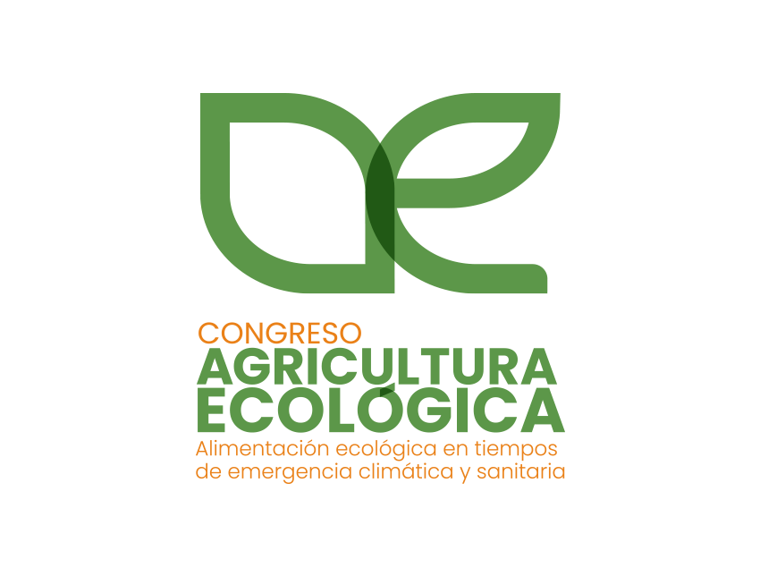

Durante los días 25 - 26 de mayo, en la Universidad Politécnica de Valencia (UPV), realizaremos el II Congreso de Agricultura Ecológica de la Comunidad Valenciana. Este congreso tiene como objetivo convertirse en un encuentro cientifico y técnico entre Investigadores, profesionales del sector agrario, administraciones, empresas ecológicas y tecnología... ¡Nos vemos en la Sala Isaac Peral de la Facultad de CC de la Empresa, UPV!